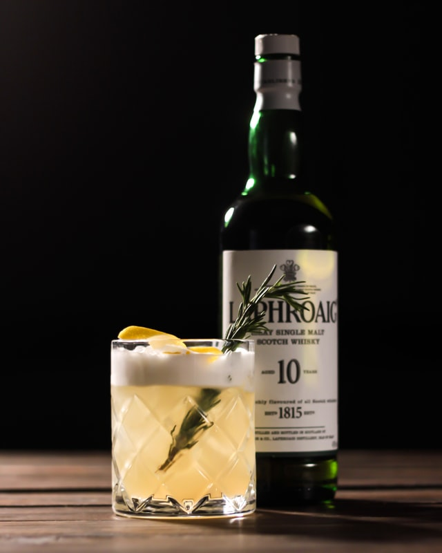

Whisky Sour

Photo by Andrey Grodz on Unsplash
Whisky sour. A personal favorite of mine. Some places will make it without the traditional egg white, but I feel the egg white adds a unique texture and makes for a great cocktail experience.
Ingredients
- 2 oz or 60 ml of whisky
- 1/2 oz or 15 ml of simple syrup
- 3/4 oz or 22 ml of lemon juice
- 1 egg white
- 4 drops of bitters
Directions
- In a cocktail shaker, Add the whisky, simple syrup, and lemon juice
- Add one egg white
- Add 1 or 2 cubes of ice into the shaker and shake vigorously for a few seconds to whip the ingredients into a froth
- Add more ice to the shaker and shake vigorously
- Pour into a sour glass or rocks glass
- Add 4 drops of bitters on the top
- Optional Garnish: Lemon peel
Home